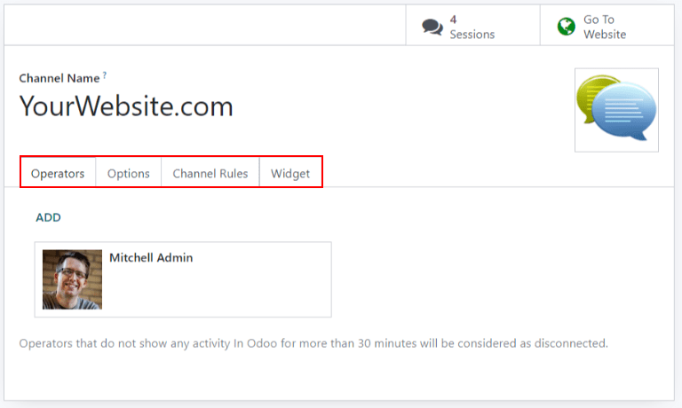
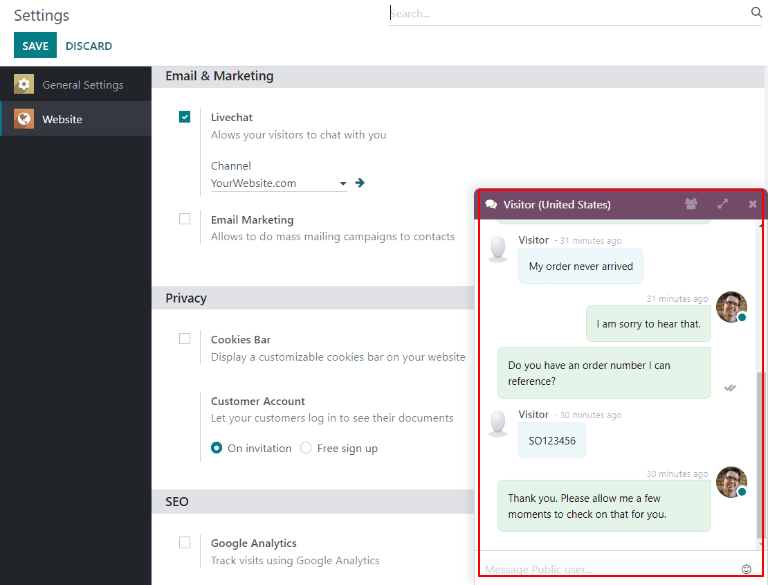
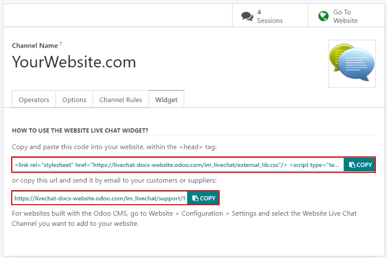
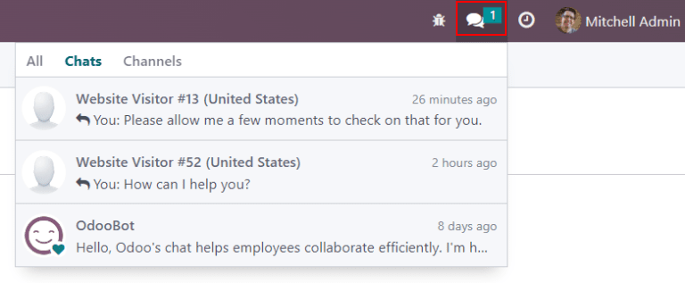
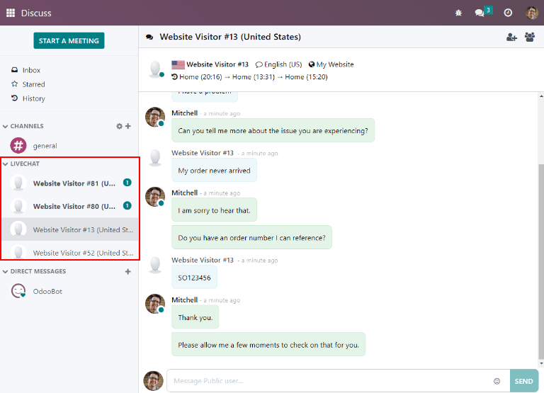

Chat en vivo¶
El Chat en vivo de Odoo le permite a los visitantes de un sitio web comunicarse dentro del mismo en tiempo real. Con el Chat en vivo, puede calificar a los leads de acuerdo a su potencial de ventas, ayudar a que la respuesta a las preguntas sea más rápida y que los equipos apropiados puedan atender e investigar (o dar seguimiento) acerca de los problemas que puedan surgir. El Chat en vivo también brinda la oportunidad de recibir retroalimentación inmediata de parte de los clientes.
Habilitar chat en vivo¶
Para activar, el Chat en vivo, debe tener instalada la aplicación Chat en vivo. Esto se puede hacer de dos maneras.
Vaya a y haga clic en Instalar.
En la aplicación , vaya a , baje hasta la sección de Correo electrónico y Marketing, seleccione la casilla que esta junto a Chat en vivo y haga clic en Guardar.

Después de tener la aplicación Chat en vivo, se creará un Canal predeterminado de chat en vivo y aparecerá seleccionado en el menú desplegable.
Crear un nuevo canal de chat en vivo¶
Para crear un nuevo Canal de chat en vivo, vaya a la aplicación .
Para configurar el resto de las pestañas en el formulario de detalles del canal (Operadores, Opciones, Reglas del canal y Widgets) siga los siguientes pasos.
Operadores¶
Los Operadores son los usuarios que responderán a las solicitudes de los clientes del chat en vivo. Cuando un usuario se agrega como operador en un canal del chat en vivo, podrán recibir chats desde los visitantes del sitio web sin importar donde estén en su base de datos. Las ventanas de chat se abrirán en la parte inferior derecha de la pantalla.
El usuario que creo originalmente el canal del chat en vivo será operador de manera predeterminada.
Para agregar usuarios adicionales, regrese al tablero de Canales del chat en vivo del sitio web a través de las migas de pan y haga clic en el Canal del chat en vivo. Luego, en el formulario detallado del canal, en la pestaña de Operadores, haga clic en Agregar para que aparezca una ventana emergente de Agregar: Operadores.
En la ventana emergente, busque los usuarios que desee. Luego, haga clic en la casilla que está junto a los usuarios para agregarlos y haga clic en Seleccionar.
Puede crear nuevos operadores y agregarlos a la lista directamente desde esta ventana emergente haciendo clic en Nuevo y llenando el formulario emergente de Crear operadores. Cuando el formulario esté completo, haga clic en guilabel:Guardar y cerrar (o en Guardar y nuevo para crear varios registros).
Nota
Puede editar (o eliminar) a los operadores actuales haciendo clic en sus respectivas casillas en la pestaña de Operadores, la cual muestra una ventana emergente adicional de Abrir: Operadores. En esa ventana, edite la información que necesite y haga clic en Guardar o haga clic en Eliminar para eliminar a ese operador del canal.
Opciones¶
La pestaña de opciones en el formulario de detalles del canal de chat en vivo contiene los ajustes visuales y de texto para la ventana de chat en vivo.
Ventana de chat en vivo¶
La ventana de chat en vivo es el espacio donde se lleva a cabo la conversación con los visitantes del sitio web.
Edite el mensaje de bienvenida para cambiar el mensaje que recibe el visitante al iniciar una nueva sesión de chat. Este mensaje simula que lo envió un operador de chat en vivo, debe funcionar como un saludo e incitar a seguir conversando.
Edite el marcador de posición de entrada de texto del chat para modificar el texto que aparece en el cuadro donde los visitantes escriben sus respuestas.
El encabezado del canal es la barra de color en la parte superior de la ventana de chat y puede cambiar el color del encabezado del canal si realiza los mismos pasos que utilizó para cambiar el color del botón de chat en vivo.
La ventana de chat en vivo aparece con un encabezado morado y el marcador de posición de entrada de texto en el chat dice «Pregunte algo…»¶
Reglas del canal¶
La pestaña Reglas del canal en el formulario de detalles del canal de chat en vivo determina cuando se abre la ventana de chat en vivo en el sitio web. Para esto, debe configurar cuando se activa una acción regex de URL (por ejemplo, una visita a la página).
Para crear una nueva regla de canal, haga clic en Agregar una línea, aparecerá la ventana emergente Abrir: Reglas.

Crear nuevas reglas¶
Complete los campos en la ventana emergente Abrir: Reglas como se indica a continuación y luego haga clic en Guardar.
El botón de chat en vivo es el icono que aparece en la esquina inferior del sitio web. Seleccione una de las siguientes opciones de visualización:
Mostrar muestra el botón de chat en las páginas.
Mostrar con notificación muestra el botón de chat y una burbuja de texto que flota junto al botón.
Abrir de forma automática muestra el botón y abre la ventana de chat en automático después de una cantidad específica de tiempo (esta se define en el campo Temporizador para abrir de forma automática).
Ocultar oculta el botón de chat en las páginas.
Si incluirá un bot de chat en este canal, selecciónelo en el menú desplegable. Si el bot de chat solo estará activo cuando no haya operadores activos, marque la casilla etiquetada como Habilitado solo si no hay operador.
En el campo Regex de URL, escriba la URL relativa de la página donde debería aparecer el botón de chat.
En este campo debe seleccionar la cantidad de tiempo (en segundos) que debe estar abierta una página antes de que se despliegue la ventana de chat. Si en el botón de chat en vivo para esta regla no seleccionó Abrir de forma automática entonces este campo no se tomará en cuenta.
Si este canal solo debe estar disponible para los visitantes del sitio en ciertos países, agréguelos al campo País. Si deja este campo vacío, el canal estará disponible para todos los visitantes sin importar su ubicación.
Nota
Para poder rastrear la ubicación geográfica de los visitantes debe instalar GeoIP en su base de datos. Esta función se instala de forma predeterminada en Odoo en línea, pero en las bases de datos locales debe realizar algunos pasos de configuración.
Widget¶
La pestaña Widget en el formulario de detalles del canal de chat en vivo proporciona el código corto para insertar un widget a un sitio web. Puede agregar este código a un sitio web para proporcionar acceso a una ventana de chat en vivo.
Puede agregar el widget de chat en vivo a sitios web creados con Odoo. Vaya a , diríjase a la sección Chat en vivo, seleccione el canal que agregará al sitio y, por último, haga clic en Guardar.
Si desea agregar el widget a un sitio web que creó en una plataforma externa, solo haga clic en el primer botón de COPIAR en la pestaña Widget y pegue el código en la etiqueta <head> del sitio.
Del mismo modo, para enviar una sesión de chat en vivo a un cliente, haga clic en el segundo botón de COPIAR en la pestaña Widget. Puede enviar este enlace a un cliente y una vez que haga clic, se abrirá un nuevo chat.
Participar en una conversación¶
Como se explicó con anterioridad, los operadores son los usuarios que responderán a las solicitudes de los clientes mediante Chat en vivo. La siguiente información describe los pasos necesarios para los operadores que participan en conversaciones de chat en vivo en una base de datos de Odoo.
Seleccionar un nombre para el chat¶
Los operadores deben actualizar su nombre de chat en línea antes de participar en un chat en vivo, este es el nombre que los visitantes del sitio verán en la conversación.
Para actualizar el nombre de chat en línea haga clic en el nombre de usuario en la esquina superior derecha desde cualquier página de la base de datos. Seleccione Mi perfil para abrir la página correspondiente. En el lado derecho de la pestaña Preferencias, localice el campo Nombre de chat en línea y escriba el nombre que desea utilizar.

Si un usuario no configuró su nombre de chat en vivo entonces el nombre que aparecerá de forma predeterminada será su nombre de usuario.
Example
Si un usuario utiliza su nombre completo como nombre de usuario pero no quiere incluir su apellido en una conversación de chat en vivo, entonces solo debe escribir su nombre en el campo de Nombre de chat en línea.

Unirse o abandonar un canal¶
Para unirse a un canal de chat en vivo, vaya a la aplicación y haga clic en el botón UNIRSE de la tarjeta kanban del canal correspondiente.
En cualquier canal donde el usuario esté activo aparecerá el botón ABANDONAR. Haga clic en este botón para desconectarse del canal.

Importante
Los operadores que se ausenten de cualquier actividad en Odoo durante más de treinta minutos se considerarán desconectados y serán eliminados del canal.
Gestionar solicitudes del chat en vivo¶
Cuando un operador está activo en un canal, las ventanas del chat se abrirán en la esquina inferior derecha de la pantalla. No importa en donde se encuentren en la base de datos, ya que pueden interactuar en conversaciones sin salir de su ubicación actual.
Truco
También puede acceder a las conversaciones, solo haga clic en el icono Conversaciones en la barra de menú.
También puede ver las conversaciones de chat en vivo con la ruta . Las nuevas conversaciones aparecerán resaltadas abajo del encabezado CHAT EN VIVO en el panel izquierdo.
Haga clic en una conversación en el panel izquierdo para seleccionarla, esto abrirá la conversación. Desde esta vista, un operador puede participar en el chat de la misma forma en que lo haría en cualquier ventana de chat.